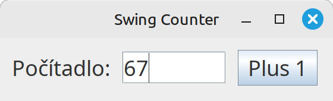
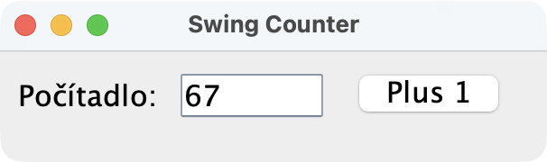
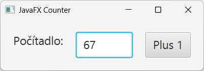
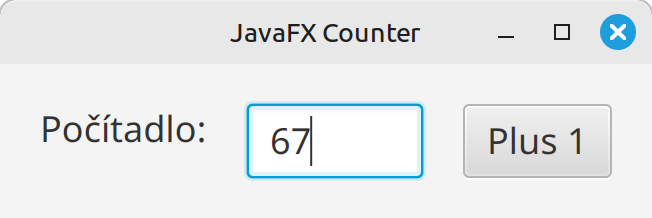
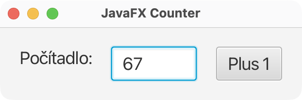

Teória 19: GUI v Jave¶
Podpora grafiky a grafického užívateľského rozhrania ma v Jave dlhú a bohatú históriu. Postupne si prejdeme a porovnáme knižnice AWT, Swing a JavaFX. Na tomto predmete budeme ďalej preberať knižnicu JavaFX.
Knižnice na kreslenie grafiky umožňujú kresliť rôzne tvary (čiary, obdĺžniky, kruhy), vypisovať text a pracovať s farbami. Ďalšou úrovňou sú GUI knižnice, ktoré poskytujú komponenty pre tvorbu užívateľského rozhrania (tlačidlá, textové polia, scrollbar, menu, tabuľky) a iné pokročilejšie funkcie. Nakoniec máme 3D knižnice, ktoré poskytujú nástroje na tvorbu 3D objektov a prostredí, vedia pracovať s textúrami a osvetlením.
AWT¶
AWT je prvá grafická knižnica v Jave (1996) poskytujúca GUI funkcionality. Neimplementuje vlastné komponenty, ale volá grafické knižnice daného operačného systému. Je to tzv. wrapper nad natívnym GUI.
Výhody
- Natívny vzhľad
- Jednoduchá architektúra
- Rýchly štart
Zásadné problémy
- Nejednotné správanie na rôznych OS
- Veľmi obmedzené možnosti kreslenia
- Ťažko rozšíriteľné
- Problémy s layoutmi a Z-orderom
O AWT sa hovorí, že používa tzv. heavyweight (ťažké, komplikované) komponenty, pretože vykresľovanie prenecháva operačnému systému, mimo Javu, a nekreslí si ich sama.
Ukážka AWT kódu¶
public class AwtCounter extends Frame {
private int counter = 0;
private TextField textField;
public AwtCounter() {
super("AWT Counter");
setLayout(new FlowLayout(FlowLayout.LEFT, 20, 20));
Font bigFont = new Font("SansSerif", Font.PLAIN, 36);
Label label = new Label("Počítadlo:");
label.setFont(bigFont);
add(label);
textField = new TextField("0", 5);
textField.setFont(bigFont);
add(textField);
Button button = new Button("Plus 1");
button.setFont(bigFont);
add(button);
button.addActionListener(e -> {
counter++;
textField.setText(String.valueOf(counter));
});
setSize(500, 180);
addWindowListener(new WindowAdapter() {
public void windowClosing(WindowEvent e) {
dispose();
System.exit(0);
}
});
setVisible(true);
}
}
Porovnanie GUI¶
Na nasledujúcich screenshotoch môžete porovnať AWT vo Windowse, Linuxe a Mac OS


Java 2D¶
Do knižnice AWT boli v roku 1998 pridané triedy pre vykresľovanie 2D grafiky, tzv. Java 2D.
Vlastnosti:
- Vektorová grafika
- Transformácie (rotate, scale, translate)
- Anti-aliasing
- Práca s fontami a obrázkami
Java 2D sa dodnes hojne používa a je aj základom pre modernejšie GUI knižnice.
Nevýhody:
- Obmedzená hardwarová akcelerácia
- Nevhodné pre moderné animácie
Swing¶
Okrem Java 2D bol v roku 1998 predstavený aj Swing a stal sa nástupcom AWT pre GUI vývoj. Je postavený nad AWT, ale používa "ľahké" komponenty (lightweight components), ktoré sa kreslia priamo v Jave bez závislosti na natívnych widgetoch. Swing sa stal štandardom pre desktopové aplikácie na viac než 10 rokov
Podporuje pokročilé komponenty ako stromy, tabuľky, editory a drag-and-drop.
Výhody:
- Konzistentné správanie
- Bohatá sada komponentov
- Plná kontrola nad vykresľovaním
Nevýhody:
- Pomalšie vykresľovanie (CPU-based)
- Zastaralý vzhľad
- Komplikovaná architektúra
Ukážka Swing kódu¶
public class SwingCounter {
private int counter = 0;
public SwingCounter() {
JFrame frame = new JFrame("Swing Counter");
frame.setDefaultCloseOperation(JFrame.EXIT_ON_CLOSE);
JPanel panel = new JPanel(new FlowLayout(FlowLayout.LEFT, 20, 20));
Font bigFont = new Font("SansSerif", Font.PLAIN, 36);
JLabel label = new JLabel("Počítadlo:");
label.setFont(bigFont);
panel.add(label);
JTextField textField = new JTextField("0", 5);
textField.setFont(bigFont);
panel.add(textField);
JButton button = new JButton("Plus 1");
button.setFont(bigFont);
button.addActionListener(e -> {
counter++;
textField.setText(String.valueOf(counter));
});
panel.add(button);
frame.setContentPane(panel);
frame.setSize(560, 170);
frame.setVisible(true);
}
}
Porovnanie GUI¶
Na nasledujúcich screenshotoch môžete porovnať Swing vo Windowse, Linuxe a Mac OS



JavaFX¶
JavaFX bol vytvorený ako moderný nástupca Swingu. Jeho prvá verzia vyšla v roku 2008. Je ľahší na učenie pre web developerov vďaka CSS. Poskytuje modernejší dizajn a ponúka aj podporu 3D grafiky. JavaFX je dnes najlepšia voľba pre nové Java desktop GUI. Pomocou pluginov sa dá JavaFX aplikácia spustiť aj na Androide a iOS.
Výhody:
- Moderný vzhľad
- GPU akcelerácia, podpora animácií a efektov
- Podpora CSS
- Scene graph - ako DOM v prehliadačoch
- FXML - ako HTML v prehliadačoch
Nevýhody:
- Nie je štandardnou súčasťou Javy
- Menší ekosystém než Swing
- Vhodný hlavne pre desktopové aplikácie
Ukážka JavaFX kódu¶
public class FxCounterApplication extends Application {
private int counter = 0;
public void start(Stage stage) {
Label label = new Label("Počítadlo:");
label.setStyle("-fx-font-size: 18px;");
TextField textField = new TextField("0");
textField.setPrefColumnCount(4);
textField.setStyle("-fx-font-size: 18px;");
Button button = new Button("Plus 1");
button.setStyle("-fx-font-size: 18px;");
button.setOnAction(e -> {
counter++;
textField.setText(String.valueOf(counter));
});
HBox root = new HBox(20, label, textField, button);
root.setPadding(new Insets(20));
Scene scene = new Scene(root);
stage.setTitle("JavaFX Counter");
stage.setScene(scene);
stage.show();
}
}
Porovnanie GUI¶
Na nasledujúcich screenshotoch môžete porovnať JavaFX vo Windowse, Linuxe a Mac OS



Zhrnutie teórie¶
Všetky príklady uvedené na tejto hodine viete nájsť a vyskúšať v repozitári na adrese https://github.com/wagjo/opg-gui
- Grafické knižnice
- 2D grafika - tvary (čiary, obdĺžniky, kruhy), text, farby, ...
- GUI - komponenty pre tvorbu užívateľského rozhrania (tlačidlá, textové polia, scrollbar, menu, tabuľky)
- 3D - textúry, polygony, scéna, osvetlenie, kamera
- AWT
- Prvá GUI knižnica v Jave (1996). Volá grafické knižnice daného operačného systému. Je to tzv. wrapper nad natívnym GUI.
- Rýchly štart, jednoduchá architektúra
- Natívny vzhľad, ale nejednotné správanie na rôznych OS
- Veľmi obmedzené možnosti kreslenia, málo komponentov
- Používa tzv. heavyweight (ťažké, komplikované) komponenty, pretože vykresľovanie prenecháva operačnému systému, mimo Javu, a nekreslí si ich sama
- Java 2D
- Do knižnice AWT boli v roku 1998 pridané triedy pre vykresľovanie 2D grafiky, tzv. Java 2D.
- Java 2D sa dodnes hojne používa a je aj základom pre modernejšie GUI knižnice.
- Vektorová grafika, Transformácie (rotate, scale, translate)
- Anti-aliasing, Práca s fontami a obrázkami
- Obmedzená hardwarová akcelerácia
- Nevhodné pre moderné animácie
- Swing
- Okrem Java 2D bol v roku 1998 predstavený aj Swing a stal sa nástupcom AWT pre GUI vývoj.
- Je postavený nad AWT, ale používa "ľahké" komponenty (lightweight components), ktoré sa kreslia priamo v Jave bez závislosti na natívnych widgetoch.
- Podporuje pokročilé komponenty ako stromy, tabuľky, editory a drag-and-drop.
- Konzistentné správanie naprieč OS, bohatá sada komponentov, plná kontrola nad vykresľovaním
- Pomalšie vykresľovanie (CPU-based)
- Zastaralý vzhľad, komplikovaná architektúra
- JavaFX
- JavaFX bol vytvorený ako moderný nástupca Swingu. Jeho prvá verzia vyšla v roku 2008.
- Je ľahší na učenie pre web developerov vďaka CSS. Poskytuje modernejší dizajn a ponúka aj podporu 3D grafiky.
- JavaFX je dnes najlepšia voľba pre nové Java desktop GUI. Pomocou pluginov sa dá JavaFX aplikácia spustiť aj na Androide a iOS.
- Moderný vzhľad, GPU akcelerácia, podpora animácií a efektov
- Podpora CSS, scene graph - ako DOM v prehliadačoch
- FXML - ako HTML v prehliadačoch
Poznámky do zošita
V zošite je potrebné mať napísané aspoň tieto poznámky:
GUI V JAVE
2D grafika - tvary (čiary, obdĺžniky, kruhy), text, farby, ...
GUI - komponenty pre tvorbu užívateľského rozhrania (tlačidlá, textové polia, scrollbar, menu)
3D - textúry, polygony, scéna, osvetlenie, kamera
AWT
- Prvá GUI knižnica v Jave (1996)
- Rýchly štart, jednoduchá architektúra
- Natívny vzhľad, ale nejednotné správanie na rôznych OS
- Veľmi obmedzené možnosti kreslenia, málo komponentov
- heavyweight (ťažké, komplikované) komponenty, pretože vykresľovanie prenecháva OS
Java 2D
- 1998, pre vykresľovanie 2D grafiky, nie GUI
- Vektorová grafika, Transformácie (rotate, scale, translate)
- Práca s fontami a obrázkami
- Obmedzená hardwarová akcelerácia
Swing
- Nástupca AWT pre GUI vývoj (1998)
- používa "ľahké" komponenty (lightweight components), ktoré sa kreslia priamo v Jave, nie cez OS
- pokročilé komponenty ako stromy, tabuľky, editory a drag-and-drop.
- Konzistentné správanie naprieč OS
- Zastaralý vzhľad, komplikovaná architektúra
JavaFX
- moderný nástupca Swingu. (2008)
- ľahší na učenie pre web developerov vďaka CSS
- Moderný vzhľad, GPU akcelerácia, podpora animácií a efektov
- Podpora CSS, scene graph - niečo ako DOM v prehliadačoch
- FXML - niečo ako HTML v prehliadačoch
Skúšanie a kontrola vedomostí
Na ďalšej hodine budeme kontrolovať nasledovné veci:
- Zapísané poznámky z hodiny vo vašom zošite
Okruhy otázok na test:
- Aké typy krafických knižníc poznáme
- Čo je AWT, aké má vlastnosti, výhody, nevýhody
- Čo je Java 2D, aké má vlastnosti, výhody, nevýhody
- Čo je Swing, aké má vlastnosti, výhody, nevýhody
- Čo je JavaFX, aké má vlastnosti, výhody, nevýhody